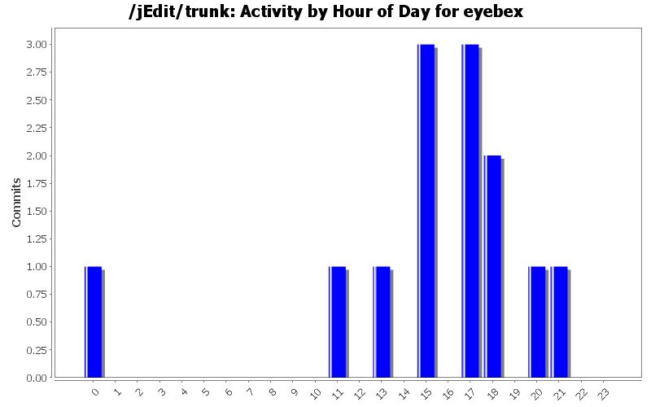
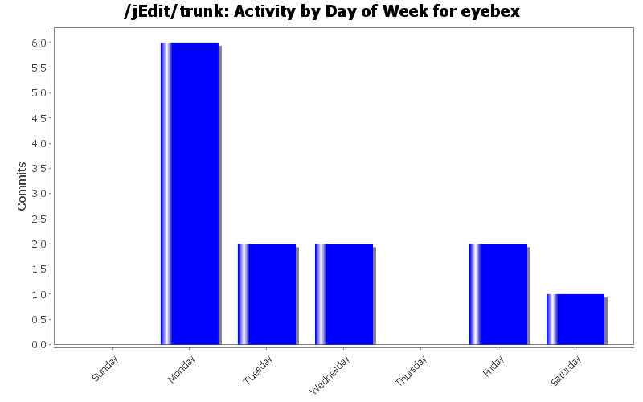
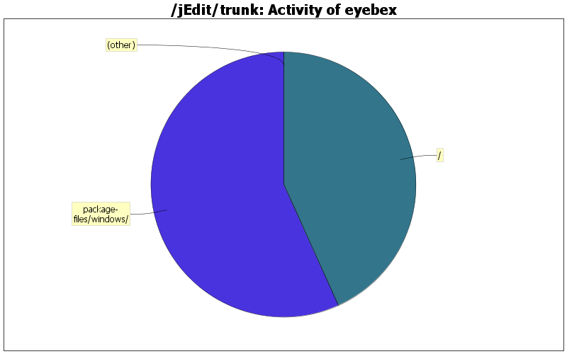

| Directory | Changes | Lines of Code | Lines per Change |
|---|---|---|---|
| Totals | 13 (100.0%) | 37 (100.0%) | 2.8 |
| package-files/windows/ | 6 (46.2%) | 21 (56.8%) | 3.5 |
| / | 5 (38.5%) | 16 (43.2%) | 3.2 |
| icons/ | 2 (15.4%) | 0 (0.0%) | 0.0 |

Do not require the user to accept the license, it's just informational (fixes SF bug #1732278).
0 lines of code changed in 1 file:
In the installer, make the old small wizard image the new (large) wizard image (they only differed in the color gradient of the "jE" logo), and create a new small wizard image of a proper size that is not displayed distorted based on "jedit-icon48.png".
1 lines of code changed in 3 files:
Do not make the installer fullscreen anymore. This is pretty much standard these days, and it does not obscure other windows / applications while installing jEdit.
0 lines of code changed in 1 file:
Remove a few setup directives which are default anyway.
1 lines of code changed in 1 file:
On 64-bit Windows, all Registry accesses should go to the 64-bit branch (esp. the Explorer shell entries), so install in 64-bit mode on such systems. Also, first test for a 64-bit Java environment, then fall back to a 32-bit one. Fixes bugs #2356913, #2846022.
13 lines of code changed in 1 file:
Allow the script to be compiled with the new Unicode version of Inno Setup (and replace two deprecated function calls).
6 lines of code changed in 1 file:
Add a note that build.dir and dist.dir need to be specified relative.
2 lines of code changed in 1 file:
Older versions of ISCC.exe did not ignore the /cc switch which is passed by build.xml, but only required with Compil32.exe. So, remove /cc and only support the ISCC.exe command line compiler as it is the better choice for this purpose, anyways.
3 lines of code changed in 2 files:
Mention that both the GUI and command line versions of the Inno Setup compiler can be used. The latter is more convenient to use if you want compile errors to go to stdout / stderr.
4 lines of code changed in 1 file:
Mention which Cygwin packages contain the required tools.
7 lines of code changed in 1 file: